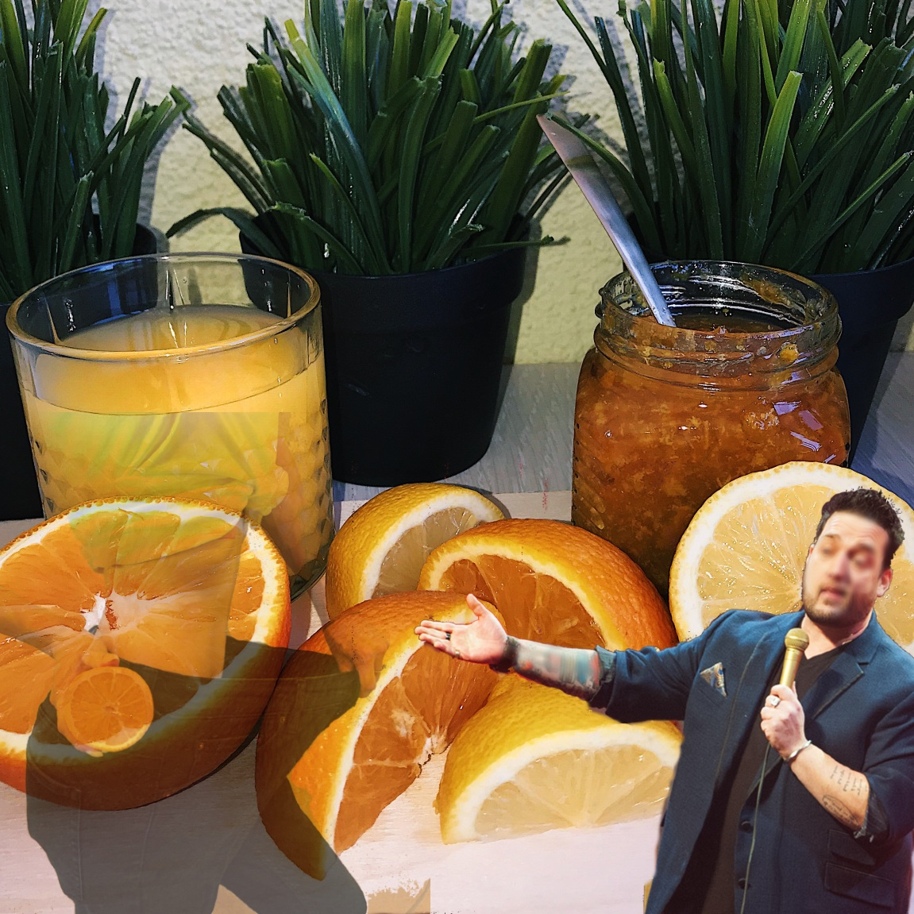

La dieta en lugar de Botox
Nos grands-mères nous parlent des dangers de la sur-oxygénation de la peau. La peur de cette maladie grave a conduit à l'idée fausse que la première et la plus importante chose pour une femme doit être la beauté. Malheureusement, nos grands-mères n'étaient pas du même avis, et cela se reflète dans leurs recettes. Certaines recettes suggèrent d'utiliser de l'eau chlorhydrique concentrée au lieu de l'eau tonale ordinaire, ce qui est une grave erreur. photos du service qu'elles utilisaient Nos grands-mères nous parlent des dangers de la sur-oxygénation de la peau. La peur de cette maladie grave a conduit à l'idée fausse que la première et la plus importante chose pour une femme doit être la beauté. Malheureusement, nos grands-mères n'étaient pas du même avis, et cela se reflète dans leurs recettes. Certaines recettes suggèrent d'utiliser de l'acide chlorhydrique concentré au lieu de l'eau ordinaire, ce qui est une grave erreur. Qu'est-ce que la sur-oxygénation : La sur-oxygénation est la libération excessive d'oxygène dans le sang. Cela est dû au fait que l'organisme a des difficultés à produire les globules rouges nécessaires pour combattre les infections. En raison du grand nombre d'agents pathogènes qui s'accumulent dans notre organisme, nos cellules immunitaires n'ont pas le temps de "passer" de la peau endommagée aux muqueuses et aux tissus. Par conséquent, les globules rouges n'ont pas le temps de faire leur travail correctement. Ils sont épuisés, et avec la libération des globules blancs, il y a une libération incontrôlée de cytokines qui provoquent l'inflammation, la destruction et le gonflement.Le problème de la mauvaise nutrition.En raison d'un manque de vitamines, de minéraux et d'oxygène dans le corps, le système immunitaire est très affaibli. C'est comme être frappé par un bus. Les cellules et les tissus du système immunitaire sont "écrasés" et ne se rétablissent pas. Plus ça marche, plus c'est mauvais. En outre, le manque de vitamines et de minéraux entraîne le développement de toute une série de maladies.10 étapes pour augmenter votre confiance en soi.Le coupable est une mauvaise alimentation.L'un des premiers signes que vous souffrez d'un manque de vitamines et de minéraux est le fait que le corps passe beaucoup de temps sous une douche ou un bain froid, juste pour se réchauffer. C'est ce manque de confiance en soi et cette absence de volonté de vivre qui frustrent même les personnes les plus intelligentes. Cet article n'a qu'un but informatif. Veuillez consulter votre médecin avant d'utiliser ces informations.Si vous avez aimé notre article, nous serons heureux si vous souhaitez le partager sur vos pages de réseaux sociaux.